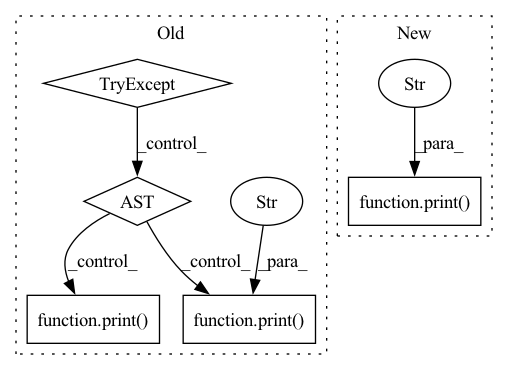

Pattern ID :36406
Before Change
if do_print:
print("resources:", resources)
try:
estimated_runtime = node.estimate_runtime(resources)
except Exception as e:
print("Time estimator errors out. "
"Defaulting estimated time to 1 day." )
print( "Error: {}".format(str(e)))
estimated_runtime = 1 * 24 * 3600
if minimize_cost:
estimated_cost = resources.get_cost(estimated_runtime)
else:After Change
print("resources:", resources)
if num_resources == 1 and node.estimate_runtime_func is None:
print("Time estimator not set and only one possible "
"resource choice; defaulting estimated time to 1 hr." )
estimated_runtime = 1 * 3600
else:
estimated_runtime = node.estimate_runtime(resources)
if minimize_cost:In pattern: SUPERPATTERN
Frequency: 3
Non-data size: 5
Instances Fragment ID: 102996455
Project Name: skypilot-org/skypilot
Commit Name: b8d9669b1a46a70a91e7061d44e4ba3630a4878b
Time: 2021-10-14
Author: zongheng.y@gmail.com
File Name: prototype/sky/optimizer.py
M Class Name: Optimizer
N Class Name: Optimizer
M Method Name: _optimize_cost(2)
N Method Name: _optimize_cost(2)
M Parent Class: object
N Parent Class: object
M File Name: prototype/sky/optimizer.py
N File Name: prototype/sky/optimizer.py
M Start Line: 138
M End Line: 154
N Start Line: 129
N End Line: 158
Before Change
from jina.serve.networking import GrpcConnectionPool
from jina.types.request.control import ControlRequest
try:
GrpcConnectionPool.send_request_sync(
request=ControlRequest("STATUS"),
target=addr,
)
except grpc.RpcError as e:
print("The pod is unhealthy" )
print( e)
raise e
print("The pod is healthy")
After Change
if not is_ready:
raise Exception("Pod is unhealthy")
print("The Pod is healthy" )
if __name__ == "__main__":
Fragment ID: 102996454
Project Name: jina-ai/jina
Commit Name: ef662b529b2a2eecea7bb99759a9f7b9d86d3062
Time: 2022-06-08
Author: joan.martinez@jina.ai
File Name: jina/resources/health_check/pod.py
M Class Name: AnonimousClass
N Class Name: AnonimousClass
M Method Name: check_health_pod(1)
N Method Name: check_health_pod(1)
M Parent Class:
N Parent Class:
M File Name: jina/resources/health_check/pod.py
N File Name: jina/resources/health_check/pod.py
M Start Line: 11
M End Line: 21
N Start Line: 1
N End Line: 13
Before Change
// evaluate objective, constraints, violation, and penalty function at x
def evaluateAtX(self,x_in):
try:
self.at_snap_shot = False
self.stat_value = float("nan")
self.fn_evals += 1
// evaluate objective and its gradient
[self.f,self.f_grad] = self.obj_fn(x_in)
// evaluate constraints and their violations (nested update)
self.eval_ineq_fn(x_in)
self.eval_eq_fn(x_in)
except Exception as e:
print( e)
print("PyGRANSO userSuppliedFunctionsError: failed to evaluate objective/constraint functions at x." )
self.x = x_in
self.feasible_to_tol = self.is_feasible_to_tol_fn(self.tvi,self.tve);
self.tv = np.max(self.tvi,self.tve)After Change
self.eval_ineq_fn(x_in)
self.eval_eq_fn(x_in)
print("skip try & except in makePenaltyFunction.evaluateAtX" )
self.x = x_in
self.feasible_to_tol = self.is_feasible_to_tol_fn(self.tvi,self.tve);
self.tv = np.max(self.tvi,self.tve) Fragment ID: 102996456
Project Name: sun-umn/pygranso
Commit Name: 58eb9b4bbf66bc2b0338605c05812f98fccb5952
Time: 2021-07-12
Author: liang664@umn.edu
File Name: python_translation/private/makePenaltyFunction.py
M Class Name: PanaltyFuctions
N Class Name: PanaltyFuctions
M Method Name: evaluateAtX(2)
N Method Name: evaluateAtX(2)
M Parent Class:
N Parent Class:
M File Name: python_translation/private/makePenaltyFunction.py
N File Name: python_translation/private/makePenaltyFunction.py
M Start Line: 201
M End Line: 214
N Start Line: 214
N End Line: 223